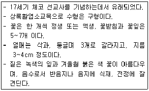
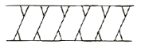

조경기능사 (2011-07-31 기출문제)
1과목: 조경일반
1. 다음 우리나라 조경 가운데 가장 오래된 것은?
- 소쇄원(瀟灑園)
- 순천관(順天館)
- 아미산정원
- 안압지(雁鴨池)
(정답률: 86%)

2. 설계 도면에서 표제란에 위치한 막대 축척이 1/200 이다. 도면에서 1cm 는 실제 몇 m인가?
- 0.5m
- 1m
- 2m
- 4m
(정답률: 81%)
3. 경관의 시각적 구성 요소를 우세요소와 가변요소로 구분할 때 가변요소에 해당하지 않는 것은?
- 광선
- 기상조건
- 질감
- 계절
(정답률: 76%)
4. 주택정원에 설치하는 시설물 중 수경시설에 해당하는 것은?
- 퍼걸러
- 미끄럼틀
- 정원등
- 벽천
(정답률: 94%)
5. 다음 골프와 관련된 용어 설명으로 옳지 않은 것은?(오류 신고가 접수된 문제입니다. 반드시 정답과 해설을 확인하시기 바랍니다.)
- 에프론 칼라(apron collar) : 임시로 그린의 표면을 잔디가 아닌 모래로 마감한 그린을 말한다.
- 코스(course) : 골프장 내 플레이가 허용되는 모든 구역을 말한다.
- 해저드(hazard) : 벙커 및 워터 해저드를 말한다.
- 티샷(tee shot) : 티그라운드에서 제 1타를 치는 것을 말한다.
(정답률: 81%)
6. 자연 그대로의 짜임새가 생겨나도록 하는 사실주의 자연 풍경식 조경 수법이 발달한 나라는?
- 스페인
- 프랑스
- 영국
- 이탈리아
(정답률: 89%)
7. 조경식물에 대한 옛 용어와 현대 사용되는 식물명의 연결이 잘못된 것은?
- 자미(紫微) - 장미
- 산다(山茶) - 동백
- 옥란(玉蘭) - 백목련
- 부거(芙渠) - 연(蓮)
(정답률: 71%)
8. 다음 중 고대 로마의 폼페이 주택정원에서 볼 수 없는 것은?
- 아트리움
- 페리스틸리움
- 포름
- 지스터스
(정답률: 81%)
9. 넓은 초원과 같이 시야가 가리지 않고 멀리 터져 보이는 경관을 무엇이라 하는가?
- 전경관
- 지형경관
- 위요경관
- 초점경관
(정답률: 80%)
10. 다음 중 차경(借景)을 가장 잘 설명한 것은?
- 멀리 보이는 자연풍경을 경관 구성 재료의 일부로 이용하는 것
- 산림이나 하천 등의 경치를 잘 나타낸 것
- 아름다운 경치를 정원 내에 만든 것
- 연못의 수면이나 잔디밭이 한눈에 보이지 않게 하는 것
(정답률: 85%)
11. 중국정원의 가장 중요한 특색이라 할 수 있는 것은?
- 조화
- 대비
- 반복
- 대칭
(정답률: 86%)
12. 정원에서 미적요소 구성은 재료의 짝지움에서 나타나는데 도면상 선적인 요소에 해당되는 것은?
- 분수
- 독립수
- 원로
- 연못
(정답률: 79%)
13. 다음 중 조경가의 입장에서 가장 우선을 두어야 할 것은?
- 편리한 교통체계의 증설
- 공공을 위한 녹지의 조성
- 미개발지의 화려한 개발촉진
- 상업위주의 도입시설 증설
(정답률: 93%)
14. 백제시대에 정원의 점경물로 만들어졌고, 물을 담아 연꽃을 심고 부들, 개구리밥, 마름 등의 부엽식물을 곁들이며 물고기도 넣어 키웠던 것은?(오류 신고가 접수된 문제입니다. 반드시 정답과 해설을 확인하시기 바랍니다.)
- 석연지
- 석조전
- 안압지
- 포석정
(정답률: 82%)
15. 일본 정원의 발달순서가 올바르게 연결된 것은?
- 임천식 -> 축산고산수식 -> 평정고산수식 -> 다정식
- 다정식 -> 회유식 -> 임천식 -> 평정고산수식
- 회유식 -> 임천식 ->평정고산수식 -> 축산고산수식
- 축산고산수식 -> 다정식 -> 임천식 -> 회유식
(정답률: 86%)
2과목: 조경재료
16. 배수가 잘 되지 않는 저습지대에 식재하려 할 경우 적합하지 않은 수종은?
- 메타세콰이어
- 자작나무
- 오리나무
- 능수버들
(정답률: 64%)
17. 목재의 단면에서 수액이 적고 강도, 내구성 등이 우수하기 때문에 목재로서 이용가치가 큰 부위는?
- 변재
- 수피
- 심재
- 변재와 심재사이
(정답률: 83%)
18. 합판의 특징에 대한 설명으로 옳은 것은?
- 팽창, 수축 등으로 생기는 변형이 크다.
- 목재의 완전 이용이 불가능하다.
- 제품이 규격화되어 사용에 능률적이다.
- 섬유방향에 따라 강도의 차이가 크다.
(정답률: 87%)
19. 양질의 포졸란을 사용한 시멘트의 일반적인 특징 설명으로 틀린 것은?
- 수밀성이 크다.
- 해수(海水)등에 화학 저항성이 크다.
- 발열량이 적다.
- 강도의 증진이 빠르니 장기강도가 작다.
(정답률: 68%)
20. 미리 골재를 거푸집 안에 채우고 특수 혼화제를 섞은 모르타르를 펌프로 주입하여 골재의 빈틈을 메워 콘크리트를 만드는 형식은?
- 서중콘크리트
- 프리팩트콘크리트
- 프리스트레스트콘크리트
- 한중콘크리트
(정답률: 63%)
21. 시공시 설계도면에 수목의 치수를 구분하고자 한다. 다음 중 흉고직경을 표시하는 기호는?
- B
- C.L
- F
- W
(정답률: 89%)
22. 다음 중 심근성 수중이 아닌 것은?
- 자작나무
- 전나무
- 후박나무
- 백합나무
(정답률: 56%)
23. 다음 [보기]가 설명하고 있는 수종은?

- 생강나무
- 동백나무
- 노각나무
- 후박나무
(정답률: 83%)
24. 화강암(granite)의 특징 설명으로 옳지 않은 것은?
- 조직이 균일하고 내구성 및 강도가 크다.
- 내화성이 우수하여 고열을 받는 곳에 적당하다.
- 외관이 아름답기 때문에 장식재로 쓸 수 있다.
- 자갈·쇄석 등과 같은 콘크리트용 골재로도 많이 사용 된다.
(정답률: 72%)
25. 이른 봄에 꽃이 피는 수종끼리만 짝지어진 것은?
- 매화나무, 풍년화, 박태기나무
- 은목서, 산수유, 백합나무
- 배롱나무, 무궁화, 동백나무
- 자귀나무, 태산목, 목련
(정답률: 78%)
26. 기름을 뺀 대나무로 등나무를 올리기 위한 시렁을 만들면 윤기가 나고 색이 변하지 않는다. 대나무 기름 빼는 방법으로 옳은 것은?
- 불에 쬐어 수세미로 닦아 준다.
- 알코올 등으로 닦아 준다.
- 물에 오래 담가 놓았다가 수세미로 닦아 준다.
- 석유, 휘발유 등에 담근 후 닦아 준다.
(정답률: 84%)
27. 골재의 표면에는 수분이 없으나 내부의 공극은 수분으로 가득차서 콘크리트 반죽시에 투입되는 물의 량이 골재에 의해 증감되지 않는 이상적인 골재의 상태를 무엇이라 하는가?
- 표면건조 포화상태
- 습윤상태
- 공기중 건조상태
- 절대건조상태
(정답률: 83%)
28. 다음 중 교목으로만 짝지어진 것은?
- 동백나무, 회양목, 철쭉
- 전나무, 송악, 옥향
- 녹나무, 잣나무, 소나무
- 백목련, 명자나무, 마삭줄
(정답률: 88%)
29. 일반적으로 여름에 백색 계통의 꽃이 피는 수목은?
- 산사나무
- 왕벚나무
- 산수유
- 산딸나무
(정답률: 58%)
30. 흙막이요 돌쌓기에 일반적으로 가장 많이 사용되는 것으로 앞면의 길이를 기준으로 하여 길이는 1.5배 이상, 접촉부 나비는 1/10 이상으로 하는 시공 재료는?
- 호박돌
- 경관석
- 판석
- 견치돌
(정답률: 86%)
31. 우리나라에서 사용하는 표준형 벽돌의 규격은?(단, 단위는 mm로 한다.)
- 300 × 300 × 60
- 190 × 90 × 57
- 210 × 100 × 60
- 390 × 190 × 190
(정답률: 93%)
32. 케빈린치(K. Lynch)가 주장하는 경관의 이미지 요소 중에서 관찰자의 이동에 따라 연속적으로 경관이 변해가는 과정을 설명할 수 있는 것은?
- landmark(지표물)
- path(통로)
- edge(모서리)
- district(지역)
(정답률: 72%)
33. 일반적으로 추운 지방이나 겨울철에 콘크리트가 빨리 굳어지도록 주로 섞어 주는 것은?
- 석회
- 염화칼슘
- 붕사
- 마그네슘
(정답률: 80%)
34. 수목식재 후 지주목 설치시에 필요한 완충재료로서 작업능률이 뛰어나고 통기성과 내구성이 뛰어난 환경 친화적인 재료이며, 상열을 막기 위해 사용하는 것은?
- 새끼
- 고무판
- 보온덮개
- 녹화테이프
(정답률: 79%)
35. 다음 중 방음용 수목으로 사용하기 부적합한 것은?
- 아왜나무
- 녹나무
- 은행나무
- 구실잣밤나무
(정답률: 64%)
3과목: 조경 시공 및 관리
36. 배식설계도 작성시 고려될 사항으로 옳지 않은 것은?
- 배식평면도에는 수목의 위치, 수종, 규격, 수량 등을 표기한다.
- 배식평면도에서는 일반적으로 수목수량표를 표제란에 기입한다.
- 배식평면도는 시설물평면도와 무관하게 작성할 수 있다.
- 배식평면도 작성시 수목의 성장을 고려하여 설계할 필요가 있다.
(정답률: 76%)
37. 다음 설계 기호는 무엇을 표시한 것인가?

- 인조석다짐
- 잡석다짐
- 보도블록포장
- 콘크리트포장
(정답률: 83%)
38. 비교적 좁은 지역에서 대축척으로 세부 측량을 할 경우 효율적이며, 지역 내에 장애물이 없는 경우 유리한 평판측량방법은?
- 방사법
- 전진법
- 전방교회법
- 후방교회법
(정답률: 56%)
39. 다음 중 질소질 속효성 비료로서 주로 덧거름으로 쓰이는 비료는?
- 황산암모늄
- 두엄
- 생석회
- 깻묵
(정답률: 75%)
40. 터파기 공사를 할 경우 평균부피가 굴착 전 보다 가장 많이 증가하는 것은?
- 모래
- 보통흙
- 자갈
- 암석
(정답률: 77%)
41. 다음 도시공원 시설 중 유희시설에 해당되는 것은?
- 야영장
- 잔디밭
- 도서관
- 낚시터
(정답률: 75%)
42. 정원에서 간단한 눈가림 구실을 할 수 있는 시설물로 가장 적합한 것은?
- 파고라
- 트렐리스
- 정자
- 테라스
(정답률: 75%)
43. 수목을 옮겨심기 전에 뿌리돌림을 하는 이유로 가장 중요한 것은?
- 관리가 편리하도록
- 수목내의 수분 양을 줄이기 위하여
- 무게를 줄여 운반이 쉽게 하기 위하여
- 잔뿌리를 발생시켜 수목의 활착을 돕기 위하여
(정답률: 92%)
44. 오리나무잎벌레의 천적으로 가장 보호되어야 할 곤충은?
- 벼룩좀벌
- 침노린재
- 무당벌레
- 실잠자리
(정답률: 76%)
45. 조경 수목에 거름 주는 방법 중 윤상 거름주기 방법으로 옳은 것은?
- 수목의 밑동으로부터 밖으로 방사상 모양으로 땅을 파고 거름을 주는 방식이다.
- 수관폭을 형성하는 가지 끝 아래의 수관선을 기준으로 환상으로 둥글게 하고 거름 주는 방식이다.
- 수목의 밑동부터 일정한 간격을 두고 도랑처럼 길게 구덩이를 파서 거름 주는 방식이다.
- 수관선상에 구멍을 군데군데 뚫고 거름 주는 방식으로 주로 액비를 비탈면에 줄때 적용한다.
(정답률: 75%)
46. 식물병의 발병에 관여하는 3대 요인과 가장 거리가 먼 것은?
- 일조부족
- 병원체의 밀도
- 야생동물의 가해
- 기주식물의 감수성
(정답률: 80%)
47. 제거대상 가지로 적당하지 않은 것은?
- 얽힌 가지
- 죽은 가지
- 세력이 좋은 가지
- 병해충 피해 입은 가지
(정답률: 92%)
48. 소나무류를 옮겨 심을 경우 줄기를 진흙으로 이겨 발라 놓은 주요한 이유가 아닌 것은?
- 해충을 구제하기 위해
- 수분의 증산을 억제
- 겨울을 나기 위한 월동 대책
- 일시적인 나무의 외상을 방지
(정답률: 56%)
49. 조경수목의 관리를 위한 작업 가운데 정기적으로 해주지 않아도 되는 것은?
- 전정(剪定) 및 거름주기
- 병충해 방제
- 잡초제거 및 관수(灌水)
- 토양개량 및 고사목 제거
(정답률: 81%)
50. 경관석을 여러 개 무리지어 놓는 것에 대한 설명 중 틀린 것은?
- 홀수로 조합한다.
- 일직선상으로 놓는다.
- 크기가 서로 다른 것을 조합한다.
- 경관석 여러 개를 무리지어 놓는 것을 경관석 짜임이라 한다.
(정답률: 83%)
51. 울타리는 종류나 쓰이는 목적에 따라 높이가 다른데 일반적으로 사람의 침입을 방지하기 위한 울타리의 경우 높이는 어느 정도가 가장 적당한가?
- 20~30cm
- 50~60cm
- 80~100cm
- 180~200cm
(정답률: 83%)
52. 콘크리트 부어 넣기의 방법이 옳은 것은?
- 비빔장소에서 먼 곳으로부터 가까운 곳으로 옮겨가며 붓는다.
- 계획된 작업구역 내에서 연속적인 붓기를 하면 안된다.
- 한 구역 내에서는 콘크리트 표면이 경사지게 붓는다.
- 재료가 분리된 경우에는 물을 부어 다시 비벼쓴다.
(정답률: 80%)
53. 수목 줄기의 썩은 부분을 도려내고 구멍에 충진 수술을 하고자 할 때 가장 효과적인 시기는?
- 1~3월
- 5~8월
- 10~12월
- 시기는 상관없다.
(정답률: 71%)
54. 비탈면에 교목과 관목을 식재하기에 적합한 비탈면 경사로 모두 옳은 것은?
- 교목 1 : 2 이하, 관목 1 : 3 이하
- 교목 1 : 3 이상, 관목 1 : 2 이상
- 교목 1 : 2 이상, 관목 1 : 3 이상
- 교목 1 : 3 이하, 관목 1 : 2 이하
(정답률: 53%)
55. 아스팔트 포장에서 아스팔트 양의 과잉이나 골재의 입도불량일 때 발생하는 현상은?
- 균열
- 국부침하
- 파상요철
- 표면연화
(정답률: 52%)
56. 계절적 휴면형 잡초 종자의 감응 조건으로 가장 적합한 것은?
- 온도
- 일장
- 습도
- 광도
(정답률: 47%)
57. 2.0B 벽두께로 표준형 벽돌쌓기를 실시할 때 기준량(㎡당)은?
- 약 195장
- 약 224장
- 약 244장
- 약 298장
(정답률: 68%)
58. 농약보관 시 주의하여야 할 사항으로 옳은 것은?
- 농약은 고온보다 저온에서 분해가 촉진된다.
- 분말제제는 흡습되어도 물리성에는 영향이 없다.
- 유제는 유기용제의 혼합으로 화재의 위험성이 있다.
- 고독성 농약은 일반 저독성 약제와 흔적하여도 무방하다.
(정답률: 71%)
59. 주로 소량의 다소에 따라서 반죽이 되고 진 정도를 나타내는 굳지 않은 콘크리트의 성질은?
- workbility(워커빌리티)
- plasticity(성형성)
- consistency(반죽질기)
- finishability(피니셔빌리티)
(정답률: 73%)
60. 알루민산 석회를 주광물로 한 시멘트로 조기강도(24시간에 보통포틀랜드 시멘트의 28일 강도)가 아주 크므로 긴급공사 등에 많이 사용되며, 해안공사, 동절기 공사에 적합한 시멘트의 종류는?
- 알루미나시멘트
- 백색포틀랜드시멘트
- 팽창시멘트
- 중용열포틀랜드시멘트
(정답률: 83%)